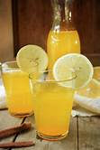

Lemonade

Description
When life gives you lemons, make the Best Lemonade Ever!
Ingredients
- Sugar
- Water
- Lemon juice
- Ice
Steps
- Start by firmly rolling the lemons around on the counter.
This will help release the juices and make your job a lot easier.
Cut the lemon in half lengthwise,
then squeeze out the juice by hand or with a juicer.
Make sure to juice the lemons over a large measuring cup so you can see exactly how much liquid you have.
- Just combine sugar and water in a small saucepan,
bring the mixture to a boil, and stir it until the sugar is dissolved.
- our cold water into a pitcher. Stir in lemon juice and pulp, then add simple syrup to taste.
- Serve over ice. If you're feeling fancy, garnish each glass with a fresh lemon slice or a candied lemon peel.